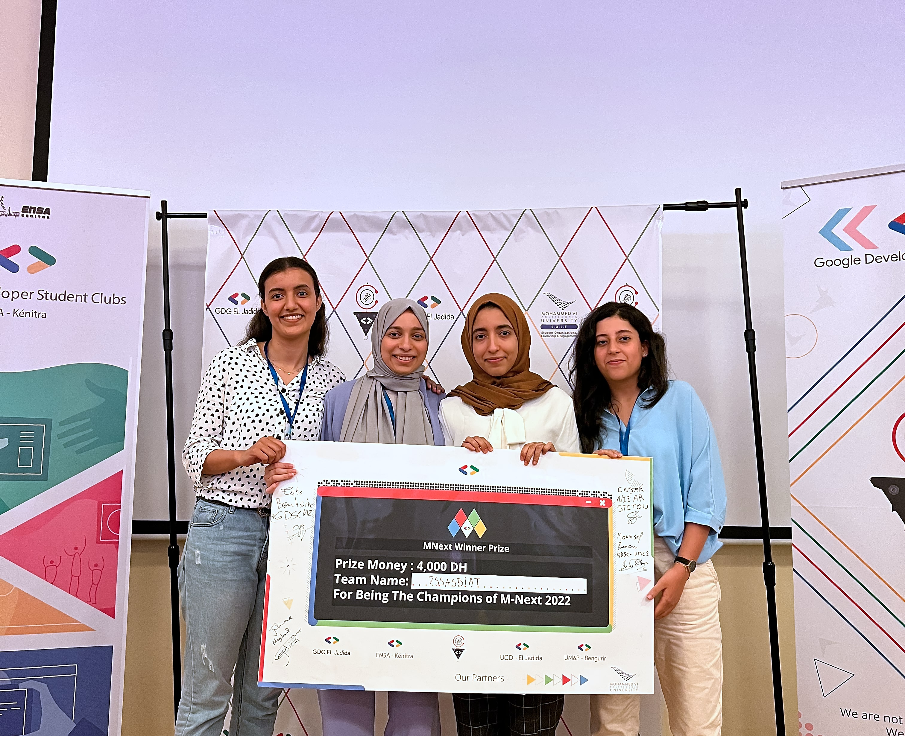
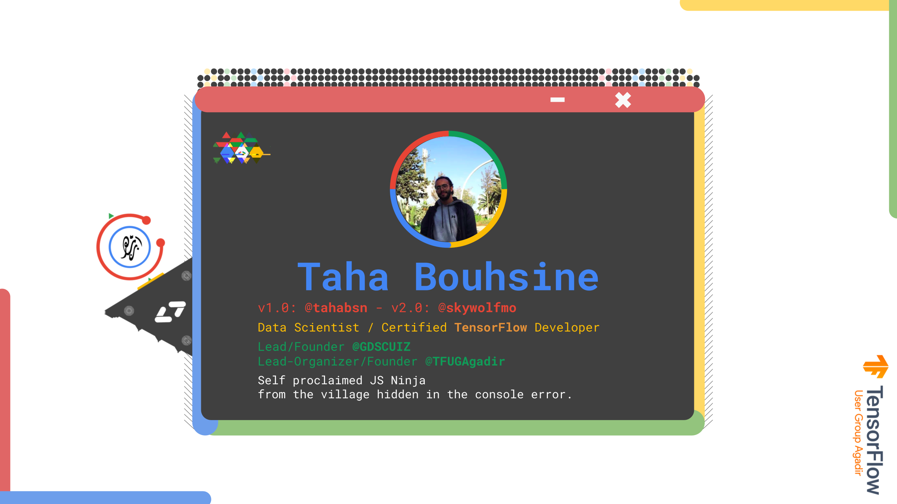
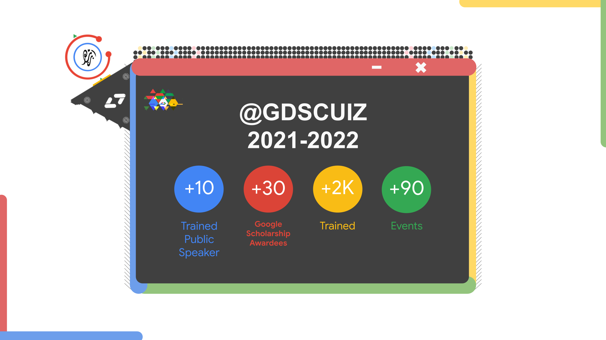

MNext 2022
What is MNEXT
A full tech hackathon organized and managed by four Moroccan GDSC who believe that Al can suggest and offer some brilliant solutions that stand with the SDGs. The first edition of M-Next took place at Mohammed VI Polytechnic University, three intensive days full of exchanges and new challenges that will make our participants think out of the box and design innovative solutions and develop them throw different hands-on workshops to bring up their idea and pitch them the 3rd day in front of our jury.
What is GDSC
Google Developer Student Clubs are university based community groups for students interested in Google developer technologies. Students from all undergraduate or graduate programs with an interest in growing as a developer are welcome. By joining a GDSC, students grow their knowledge in a peer-to-peer learning environment and build solutions for local businesses and their community.
Winners - L7ssassbyat

Our Leads
Taha Bouhsine
> Half coffee, half human
> When in doubt, ask @tahabsn
He goes by many names, He is known for many skills. A man from myths and legends, he challenged demons and purged devils. Taha of the house Bouhsine, First of his name, Jake of all trades, Master of his craft, Breaker of GPUs, Google Certified TensorFlow Developer, Lead @gdscuiz, Organizer @tfugagadir, Hater of PHP. Self-proclaimed Javascript ninja from the vilage hidden in the console error.
He is a Machine Learning Researcher/Engineer and Consultant and a Data Scientist. He obtained his Bachelor of Science in Mathematics and Computer Science from the Faculty of Science Agadir, Ibn Zohr University, Morocco in 2020, then continued to receive his Master of Research degree in Data Science from the same University in 2022. His research interest includes Machine Learning, Computer Vision, Signal Processing, and Natural Language Processing, applied to solve real-world problems. He is The 8th Moroccan and the first Lead of 2021-2022s GDSC MENA Cohort to become Google Certified TensorFlow Developer. He is a Google Certified Data Analyst. He is the 2022'Lead and founder of Google Developer Student Clubs Ibn Zohr University, and Lead-Organizer and Founder of TensorFlow User Group Agadir.
Jake of all trades, Master of these
Best Quote: "If one does not know to which port one is sailing, no wind is favorable ~ Seneca"
A Data scientist by day, Skywolf by night
My code is spaghetti, but no bugs at sight
My data is scrambled, but my models are lite
Live slow, die whenever is right

Lead of Google Developer Student Clubs Ibn Zohr University @GDSCUIZ
We are not here to talk the change...We are the change!

Jihan Majdoul
She is the lead of GDSC UCD, a BI Engineer and Data Analyst, a Competitive Programmer, driven by a love and passion from computer science, bringing her the the current stage where she became a Women Techmaker Ambassador and the Lead Organizer of GDG El Jadida. To define me as a self-learning person and curious about problem-solving, I've been doing c problem-solving, learning new practical skills and programming since my youth, I followed my way to computer science by love and passion, in the course of my university studies I have the opportunity to benefit from a curriculum based on computer and data science. As part of the preparation for my master's degree in business intelligence and big data analytics, I'm a Google Developer Student Clubs UCD lead and a Women Techmaker Ambassador. Currently looking forward to pursuing Data Science and Analytics as a career.
22'Lead of Google Developer Student Clubs Chouhaib Doukali University @GDSCUCD
Mouncef Benouri
He's an engineer student at EMINE School of Industrial Management at Mohammed VI Polytechnic University, Founder and Leader of Google Developer Student Club at UM6P 2021/22.
He's an engineer student passionate about finance and digital domain, driven by a motivation to put his full energy in what he loves in that world. This passion led him to challenge himself daily and learn new skills that helped him to grow.
Founding and leading a GDSC inside his university was one of these challenges and a life changing experience that helped him to develop leadership skills and teamwork. During this journey he learned new skills in the technical side as in the non-technical side, he made new connection either in his university, Morocco or even the MENA region, and learned about new opportunities.
And due to his education at EMINES he had a technical background in different fields from the best professors, like Analytics Edge and optimization methods by Pr. DimitrisBertsimas, Macroeconomy from Pr. Pierre Noel Giraud, Control Engineering by Pr. Sebastien Boisgerault, SPL by Pr. Frederic Fontane, Cost Evaluation by Pr. Frederic Kletz, Mining Strategy by Pr. Damien Goetz, Biomedical Engineering by Pr. Marcel Filoche and much more. That rich and varied learning path helped him to get the necessary skills to work on different projects and make them a success.
22'Lead of Google Developer Student Clubs UM6P @GDSCUM6P
Nizar Stitou
I’m Nizar Stitou, an ambitious and dedicated software engineering student with strong practical and technical skills.
I became the 10th Moroccan, and the second lead from this year's cohort the Google Developers Student Clubs of the MENA region to pass the TensorFlow Certificate Program offered by Google.
I am a hard-working and driven individual who isn't afraid to face a challenge. Also, a passionate learner who is interested in learning new technologies such as Data Science, Machine Learning, and Web Development…
I’m the Founder & Leader of GDSC - ENSAK. I was so motivated to apply for GDSC Lead because I love the spirit of being in a strong and loving community that puts sharing on the top of everything. During this year, we organized a lot of events, scheduled some learning sessions, brought mentors, introduced the newest technologies in order to level up and to take our skills to the next level.
Personalitywise, I would describe myself as an open and honest person who doesn't believe in misleading other people and tries to be fair in everything I do.